Week 1 — Installation and Testing of the Local Development Environment
| # | Task Performed | Description | Status |
|---|
| 1 | Install XAMPP | Downloaded and installed XAMPP v8.2 on Windows; confirmed Apache, MySQL, and PHP components were included | Done |
| 2 | Start Services | Launched Apache and MySQL from XAMPP Control Panel; resolved a port 80 conflict by changing Apache to port 8080 in httpd.conf | Done |
| 3 | Test Localhost | Opened a browser and visited http://localhost:8080 — confirmed the XAMPP welcome dashboard loaded correctly | Done |
| 4 | First PHP Page | Created a quickcart folder inside htdocs and wrote an index.php file with a simple echo statement; verified it rendered in the browser | Done |
| 5 | Database Connection | Created quickcart_db in phpMyAdmin; wrote includes/db.php using mysqli_connect() and confirmed the connection was successful | Done |
Figures
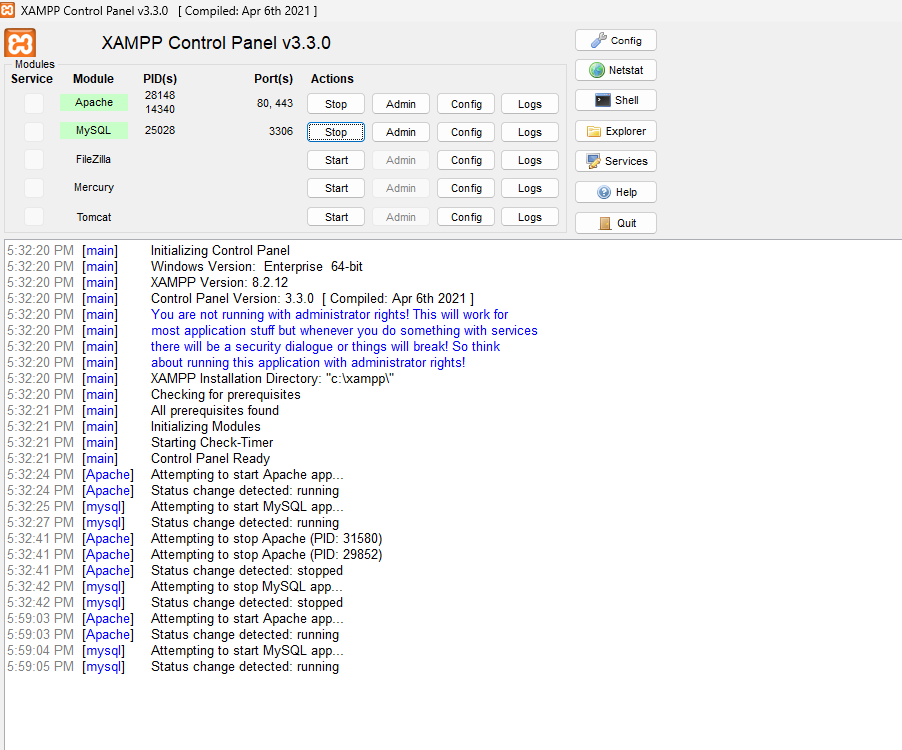
Figure 1: XAMPP Control Panel with Apache running on port 8080 and MySQL running on port 3306 — both modules showing a green running status.
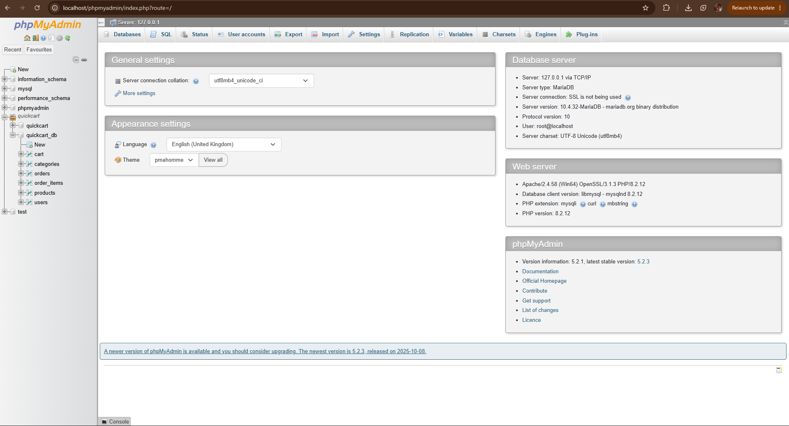
Figure 2: Browser displaying the XAMPP dashboard at http://localhost:8080, confirming Apache is serving pages correctly from the htdocs directory.
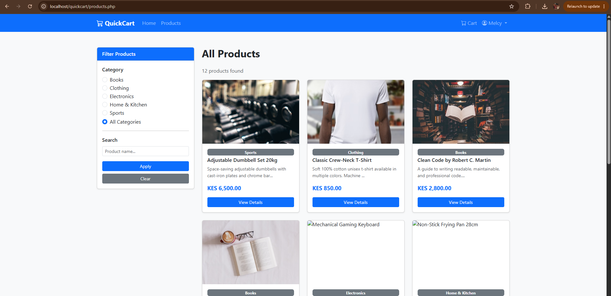
Figure 3: Browser rendering the QuickCart homepage at http://localhost/quickcart/ with featured products loading from the database, confirming PHP is processing correctly.
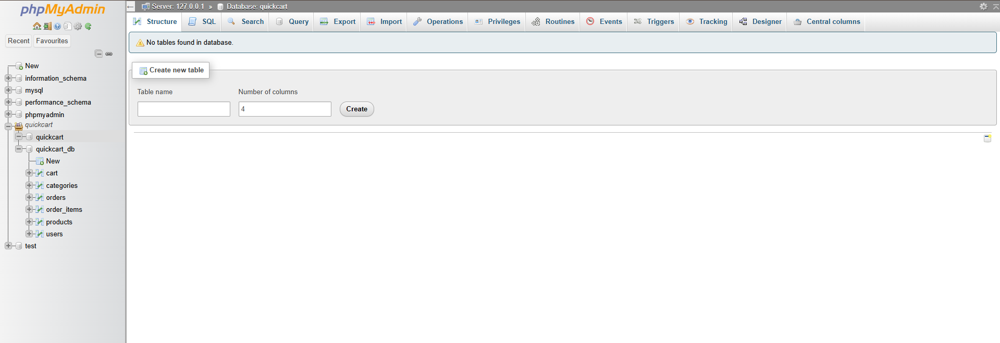
Figure 4: phpMyAdmin interface showing the quickcart_db database created in the left sidebar, confirming the MySQL database layer is ready for the project.
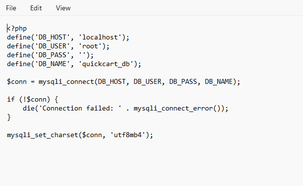
Figure 5: The db.php connection file showing the mysqli_connect() call with database credentials, confirming the PHP-to-MySQL connection is configured correctly.
Reflection
Setting up XAMPP went fairly smoothly overall, but I ran into one issue early on — port 80 was already occupied by another process on my machine, which stopped Apache from starting. After looking it up, I edited the httpd.conf file and changed the listening port to 8080, which fixed it straight away. Creating my first PHP file felt different from anything I had done in HTML and CSS; understanding that the server processes the script before the output reaches the browser was a key shift in how I thought about things. Connecting to quickcart_db using mysqli_connect() actually worked on the first attempt, which was a good way to start the project.
Week 2 — User Interface Planning and System Design
| # | Task Performed | Description | Status |
|---|
| 1 | Homepage Wireframe | Drew a hand-sketched wireframe of the QuickCart homepage with a navigation bar, hero section, and a three-column product grid | Done |
| 2 | Admin Dashboard Sketch | Designed the admin panel layout on paper showing stat cards for total products and orders, plus quick navigation to management sections | Done |
| 3 | Mobile View Mockup | Sketched a mobile-first product listing layout showing how product cards stack to a single column on smaller screens | Done |
| 4 | Color Scheme and Navigation | Decided on blue (#0d6efd) and white as the main color theme; finalized a top navigation bar with a cart icon and login link | Done |
| 5 | Digital Prototype | Recreated the homepage and login page wireframes as a digital prototype, showing annotated page flow and component placement | Done |
Figures
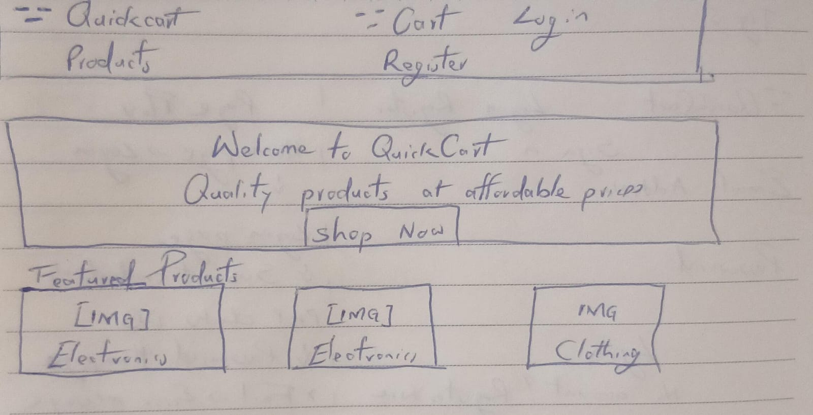
Figure 1: Hand-drawn wireframe of the QuickCart homepage showing the navigation bar, hero banner, and three-column product grid layout.
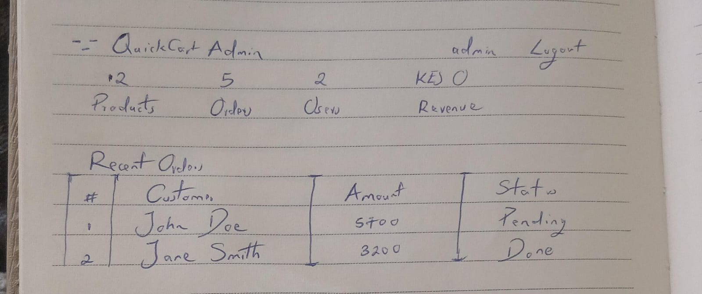
Figure 2: Sketch of the admin dashboard with stat cards for product count and order count, recent orders table, and quick navigation links.
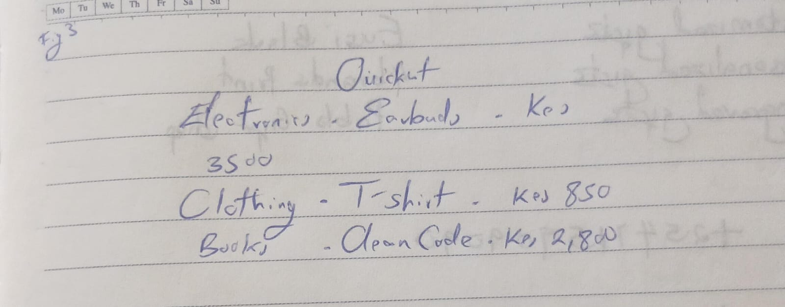
Figure 3: Mobile-oriented wireframe showing the product listing page with a single-column stacked card layout for small screen sizes.
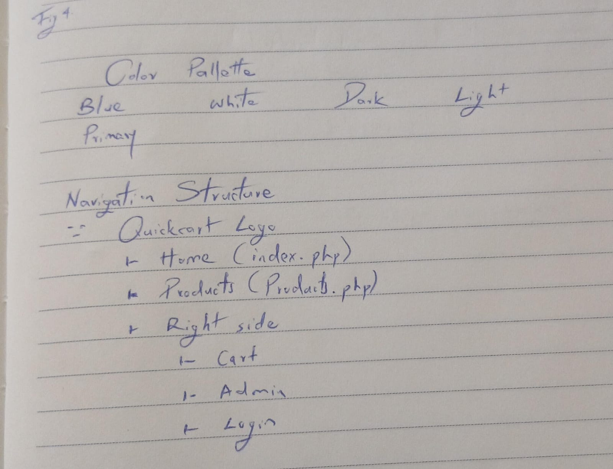
Figure 4: Color palette showing the blue and white theme with hex codes, alongside the planned top navigation bar structure with role-based links.
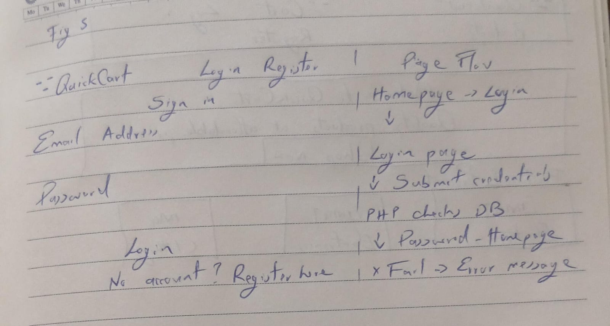
Figure 5: Prototype of the QuickCart login page showing the form layout alongside the authentication flow from form submission through PHP session creation.
Reflection
I spent most of this week on sketches before writing any code, which felt slow at first but turned out to be the right approach. Planning where the product grid, the search bar, and the navigation links would go made the HTML work that came later much more straightforward. Choosing a color scheme took more time than I expected — I first tried a green theme but it felt too generic for a shopping site. I settled on blue and white because it felt more professional and consistent with how well-known e-commerce platforms tend to look. Moving the paper sketches into a digital prototype was where most of the time went, mostly due to trying to get the spacing and alignment looking clean.
Week 3 — Frontend Interaction and Backend Foundations
| # | Task Performed | Description | Status |
|---|
| 1 | JS Form Validation | Wrote JavaScript to validate the QuickCart login form — checks for empty email and password fields, displays inline error messages without submitting the form | Done |
| 2 | Password Strength Checker | Built a live password strength indicator on the registration form using regex to check minimum length, presence of a number, and a special character | Done |
| 3 | PHP Syntax Practice | Wrote and tested a standalone PHP script practising variables, conditional statements, for loops, and functions with parameters | Done |
| 4 | Database Connection Script | Completed includes/db.php with mysqli_connect(), error handling using die(), and tested against the live quickcart_db database | Done |
| 5 | Dynamic Product Display | Used mysqli_query() and a while loop in products.php to fetch product records and render them as Bootstrap cards in the browser | Done |
Figures
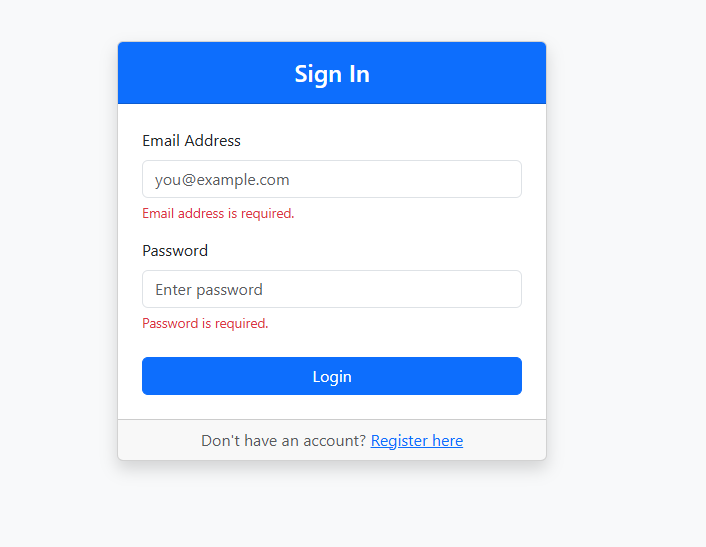
Figure 1: Login form displaying JavaScript validation error messages when submitted with empty email and password fields — no page reload occurs.
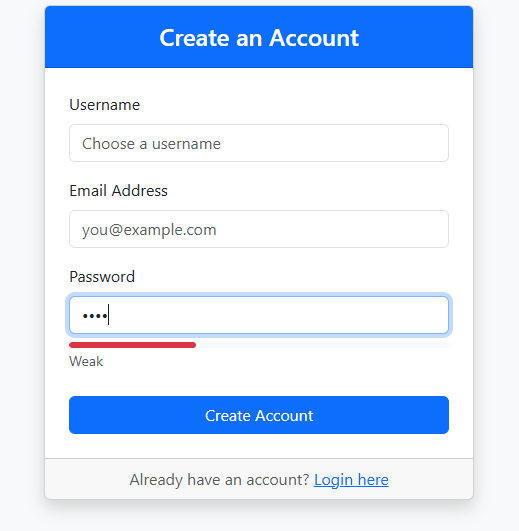
Figure 2: Registration page showing the live password strength indicator cycling through Weak, Medium, and Strong states as the user types.
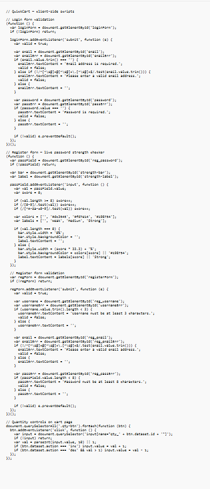
Figure 3: Browser output of a PHP practice script demonstrating a variable, a conditional block, a for loop, and a user-defined function with a return value.
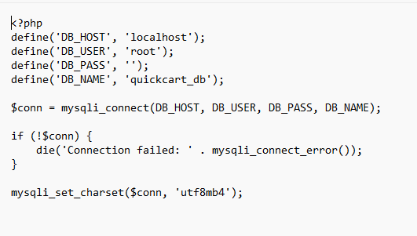
Figure 4: The completed db.php file showing the mysqli_connect() call, database credentials, and the connection-check conditional block.
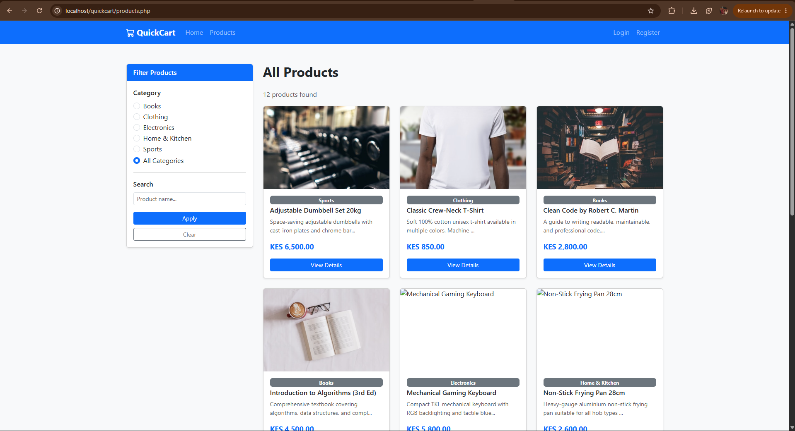
Figure 5: Browser displaying the QuickCart products page with product cards rendered dynamically — names, prices, and images fetched live from the products table in quickcart_db.
Reflection
JavaScript form validation went fairly well until I started building the password strength checker. The regex took several revisions — it kept being either too permissive or flagging passwords that should have been acceptable. Once I split the check into separate conditions for length, digits, and special characters, it became easier to control. PHP felt different from JavaScript even though the syntax looks similar at a glance; the server-side execution model took some adjusting to think about. The most satisfying moment this week was getting mysqli_query() to retrieve records from the products table and rendering them as cards on the page — that connection between the database and what appears in the browser made the whole architecture make sense.
Week 4 — Server-side Development with PHP
| # | Task Performed | Description | Status |
|---|
| 1 | Login Form Processing | Wrote login.php to receive $_POST data, query the users table by email, and verify the submitted password against the stored hash | Done |
| 2 | Session Management | Called session_start() at the top of each page and stored $_SESSION['user_id'] and $_SESSION['username'] after a successful login | Done |
| 3 | Password Hashing | Updated the registration script to store passwords with password_hash(PASSWORD_DEFAULT); updated the login check to use password_verify() | Done |
| 4 | Session Guards | Added an authentication check at the top of header.php — pages that require login redirect to login.php if $_SESSION['user_id'] is not set | Done |
| 5 | Admin Access Control | Built admin/products.php for adding and listing products; access is restricted to users whose role column equals admin | Done |
Figures
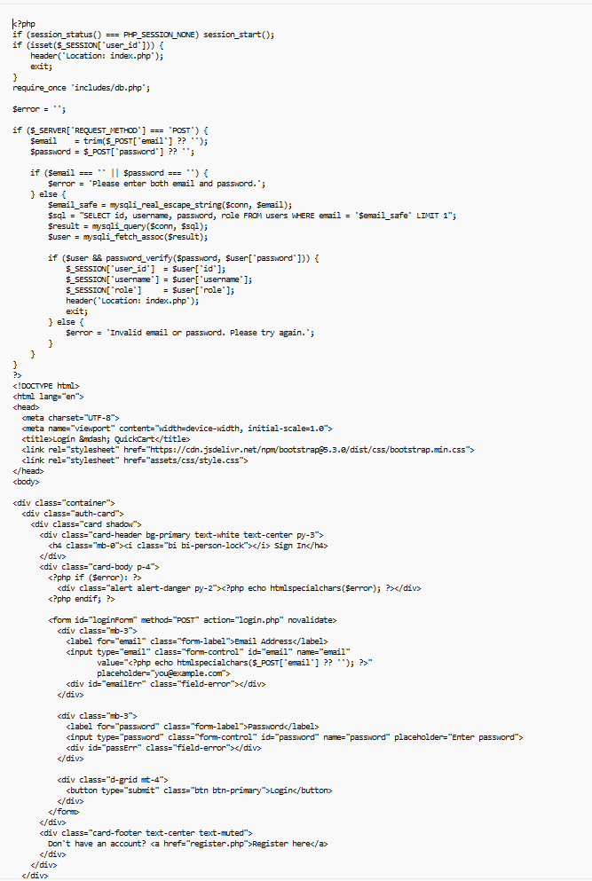
Figure 1: login.php open in the editor showing the $_POST form handler, the mysqli_query() user lookup, and the password_verify() credential check.
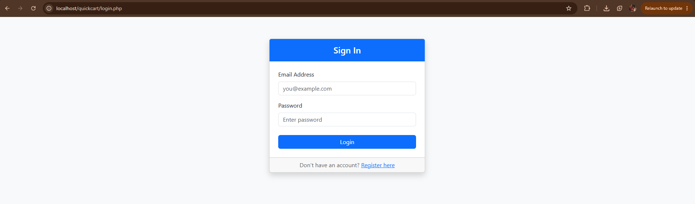
Figure 2: QuickCart login page displayed in the browser with the email and password input fields and a Bootstrap-styled submit button.
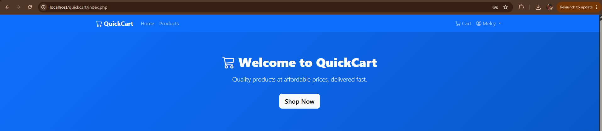
Figure 3: Homepage after a successful login — the navigation bar displays the logged-in username and a Logout link, confirming the session is active.
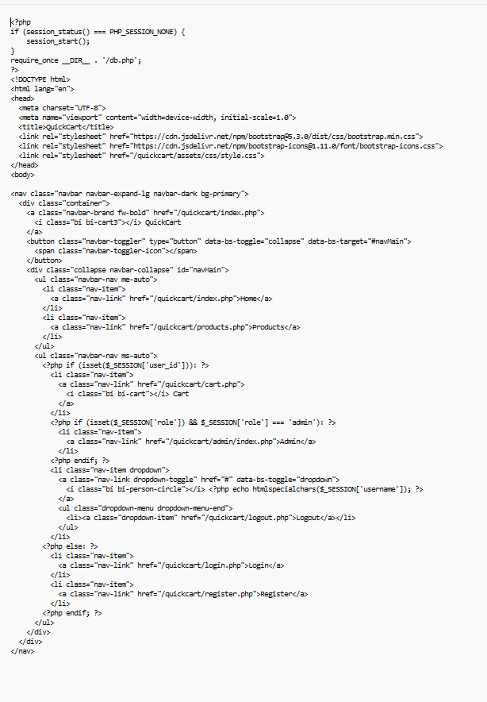
Figure 4: The session guard block in header.php — PHP code that checks isset($_SESSION['user_id']) and redirects unauthenticated users to login.php.
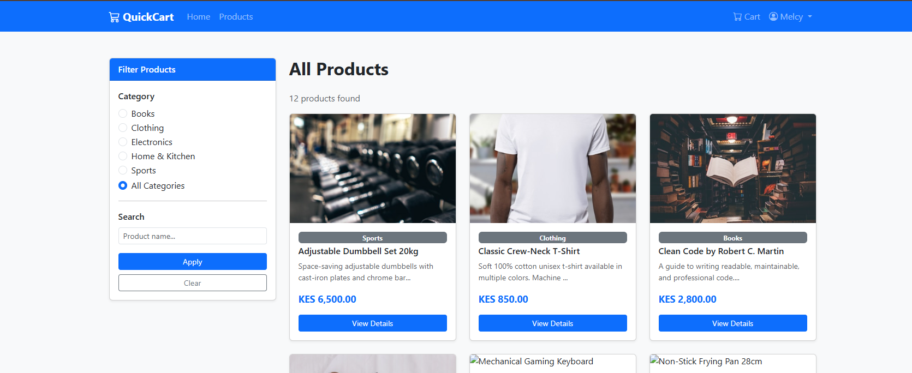
Figure 5: Browser showing admin/products.php — the product management interface accessible only after logging in with an account that has the admin role.
Reflection
Building the login system was more involved than the earlier weeks. The most frustrating problem was with sessions not persisting — after logging in, users were being sent straight back to the login page on every subsequent request. After spending time with the problem I realized I had not placed session_start() at the very top of each protected page, meaning the session variables were simply not available when the guard check ran. Once that was in place the redirects worked as expected. I also chose to use password_hash() and password_verify() rather than storing passwords as plain text, which added a small amount of work to both the registration and login scripts but felt like the correct approach.
Week 5 — Database Design and SQL Integration
| # | Task Performed | Description | Status |
|---|
| 1 | Schema Design | Designed the full quickcart_db schema with six tables: users, categories, products, cart, orders, order_items | Done |
| 2 | Create Tables in phpMyAdmin | Created all six tables using the phpMyAdmin SQL editor; defined primary keys, data types, NOT NULL constraints, and AUTO_INCREMENT on ID columns | Done |
| 3 | Insert Sample Data | Ran INSERT statements to populate the categories and products tables with test data for development | Done |
| 4 | SELECT with JOIN | Wrote a SELECT query joining the products and categories tables on category_id to retrieve product details alongside their category names | Done |
| 5 | Live Data in Browser | Updated products.php to use the JOIN query; verified products display with correct category labels pulled from the live database | Done |
Figures
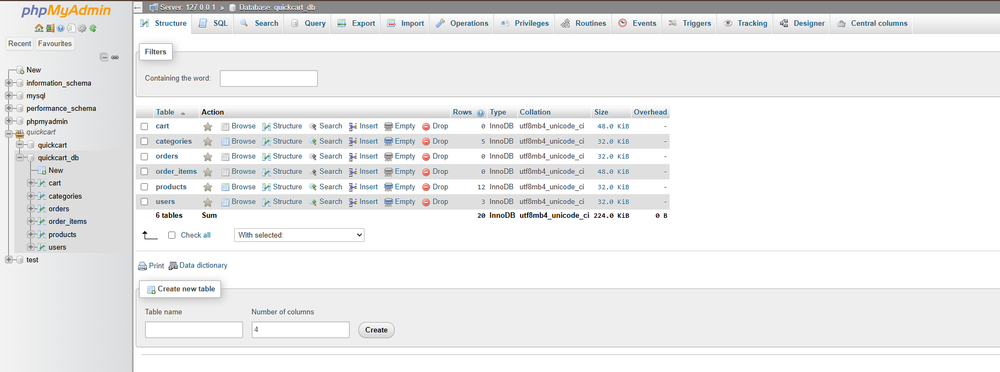
Figure 1: phpMyAdmin showing the quickcart_db database with all six tables listed: users, categories, products, cart, orders, and order_items.
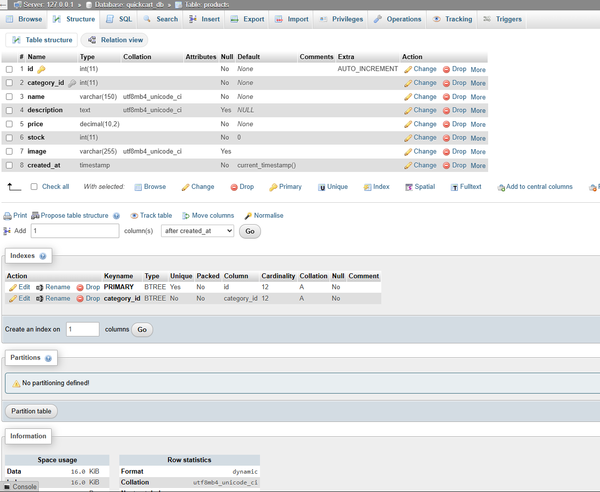
Figure 2: phpMyAdmin table structure view for the products table showing column names, data types, and constraints including the foreign key on category_id.
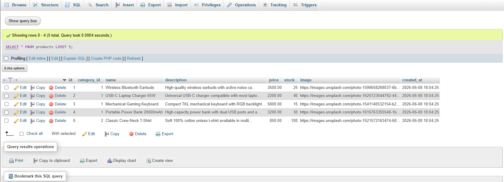
Figure 3: phpMyAdmin SQL tab showing a SELECT query executed on the products table, with the results grid displaying product records.
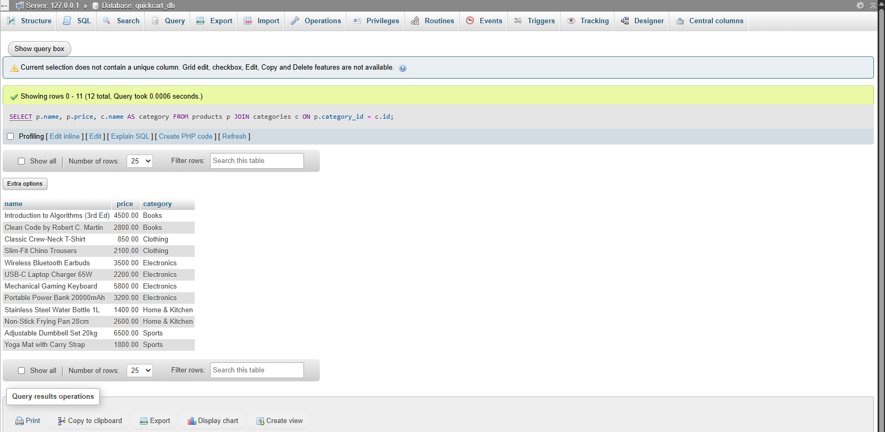
Figure 4: phpMyAdmin showing the result of a SELECT query that JOINs the products and categories tables, displaying product names alongside their matching category names.

Figure 5: Browser showing the QuickCart product listing page with names, prices, category labels, and images retrieved live from quickcart_db using the JOIN query.
Reflection
Designing the database schema required the most thought of any week so far. Rather than storing the category name as a text column in every product row, I created a separate categories table and linked it to products using a foreign key on category_id. This caused a problem early on because phpMyAdmin threw an error when I tried to insert products before the corresponding categories existed — once I understood that foreign key constraints enforce the insertion order, it made complete sense. Writing the JOIN query to combine both tables was unfamiliar at first and took a couple of attempts to get the syntax correct. When the products page finally loaded with proper category names displayed under each item, the whole project started to feel like a real working website.